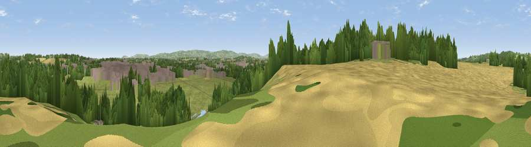

Clark's Hill
#24490 in England · top 59% of its area beats it · near EveshamThe view, rendered

A 360° render of this exact spot computed from the terrain model, tree cover and land cover — summer colours, afternoon light, calibrated against photographs of famous viewpoints. Real trees, hedges and buildings will differ in detail.
The panorama
Grey silhouette: terrain skyline in each direction (720 bearings, Earth curvature and refraction included). Dashed green: skyline with trees (+15 m) and buildings (+8 m) as obstacles. Blue strip: how far the ground is visible on each bearing.
Where the view opens
Wedge length = distance to the farthest visible ground on that bearing (vegetation-aware). Rings at 10, 25 and 50 km.
What fills the view
38% grassland · 27% woodland · 18% cropland · 14% built-up · 2% water
Angular shares of the visible panorama (visual magnitude), not map area. Landscape diversity 0.61 (0–1 Shannon).
Key numbers
More beautiful places nearby
The staircase of upgrades: each row has a higher view potential than everything closer. Driving times are estimates from straight-line distance, calibrated against real road routing — check an actual route before setting out.
| Place | Direction | Drive | Score |
|---|---|---|---|
| Viewpoint near Cropthorne | WSW · 2 km | ~6 min | 56.0 |
| Viewpoint near Elmley Castle | SW · 3 km | ~7 min | 57.3 |
| Viewpoint near Lenchwick | NNW · 4 km | ~8 min | 61.3 |
| Viewpoint near Lenchwick | NNW · 4 km | ~9 min | 66.0 |
| Viewpoint near Ashton Under Hill | SW · 6 km | ~13 min | 67.8 |
| Viewpoint near Ashton Under Hill | SW · 6 km | ~13 min | 72.8 |
| Viewpoint near Elmley Castle | WSW · 6 km | ~13 min | 76.9 |
| Viewpoint near Elmley Castle | SW · 7 km | ~14 min | 80.5 |
52.09365, -1.96041 · source: osm peak · position refined by local search. Computed location — check access rights before visiting.